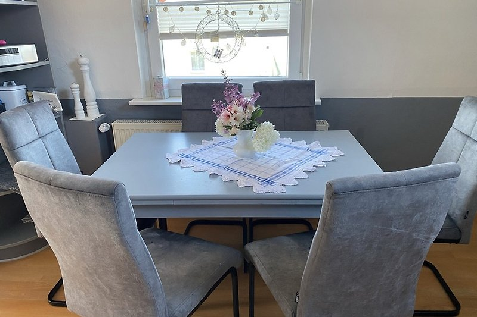
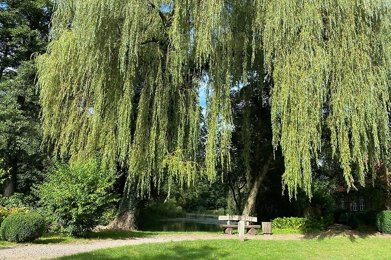

Die Unterkunft
80 m² Platz für bis zu 6 Gäste
Eine großzügige Maisonette-Wohnung mit eigenem Eingang, zwei Schlafzimmern und privatem Parkplatz in Walsrode.
Objektdaten
Die wichtigsten Fakten
Die Ferienwohnung verteilt sich über zwei Ebenen und verbindet einen gemütlichen Wohnbereich mit flexiblen Schlafmöglichkeiten für Paare, Familien und kleine Reisegruppen.

Beschreibung
Großzügige Maisonette-Ferienwohnung
Die großzügige Maisonette-Ferienwohnung mit eigenem Eingang und privatem Parkplatz liegt in unmittelbarer Nähe zum Erholungswald Eibia.
Das erste Schlafzimmer verfügt über ein Doppelbett, ein Babybett und einen großen Kleiderschrank. Das zweite Schlafzimmer liegt im ausgebauten Dachboden und ist über eine Wendeltreppe erreichbar. Dort befinden sich ein weiteres Doppelbett, eine ausziehbare Couch und ein Fernseher. Damit bietet die Wohnung Platz für bis zu sechs Personen.
Schlafzimmer 1: Doppelbett, Babybett und Kleiderschrank
Schlafzimmer 2: Doppelbett und ausziehbare Schlafcouch
Fernseher im oberen Schlafbereich
Zugang zum Dachgeschoss über eine Wendeltreppe
Wohnen & Kochen
Gemütlich wohnen und gemeinsam essen
Das Wohnzimmer mit gemütlicher Sitzecke und Fernseher bietet genügend Platz, um den Abend in Ruhe ausklingen zu lassen. Alle Räume sind mit Parkett oder Laminat ausgelegt.
Das Badezimmer verfügt sowohl über eine Dusche als auch über eine Badewanne. In der voll ausgestatteten Küche mit allen nötigen Kochutensilien bekommt man auch im Urlaub Lust zu kochen.
Der schön angelegte Garten mit überdachter Sitzecke lädt zu einem ausgedehnten BBQ ein. Auf Wunsch steht außerdem eine Hängematte zum Ausruhen bereit.
Wohnzimmer mit Sitzecke und Fernseher
Voll ausgestattete Küche mit Kochutensilien
Badezimmer mit Badewanne und Dusche
WLAN und Waschmaschine

Ausstattung
Komfort drinnen und draußen
Die Ausstattung deckt die wesentlichen Bedürfnisse eines längeren Familien- oder Erholungsurlaubs ab.
Unabhängiges Ankommen und mehr Privatsphäre.
Stellplatz direkt an der Unterkunft.
Grüner Außenbereich rund um das Ferienhaus.
Geschützter Platz zum Entspannen im Freien.
Für gemütliche Stunden im Garten.
Babybett und flexible Schlafcouch vorhanden.
Bitte vor der Buchung mit dem Gastgeber klären.
Rauchen ist in der Wohnung nicht gestattet.

Lüneburger Heide
Natur, Geschichte und Freizeitziele
Haus Mara liegt im Herzen der Lüneburger Heide und ist ideal zum Radfahren und Wandern. Die Naherholungsgebiete Eibia und Wisselshorst gehören zu den waldreichsten Gebieten im Landkreis und liegen in der Gemeinde Bomlitz.
Die Eibia ist Landschaftsschutzgebiet und hat vieles zu bieten: Hügelgräber aus der Jungsteinzeit, die Borger Burg aus dem frühen Mittelalter und die historische Cordinger Mühle. Der Schriftsteller Arno Schmidt lebte nach dem Zweiten Weltkrieg in einem alten Gutshaus an der Mühle und schrieb dort einige seiner Werke. Informationshefte zu geführten Wanderungen liegen zur Ansicht bereit.
Schwimmbad: etwa 1 km
Weltvogelpark Walsrode: etwa 3 km
Golfplatz: etwa 4 km
Serengeti-Park Hodenhagen: etwa 15 km
Heide Park: etwa 24 km
Designer Outlet Soltau: etwa 20 km
Magic Park Verden: etwa 27 km
Snow Dome und Kartbahn: etwa 40 km
Ort & Lage
Haus Mara in Bomlitz/Benefeld
Haus Mara befindet sich in Walsrode, Ortsteil Bomlitz/Benefeld. Einkaufsmöglichkeiten, Apotheke und Verkehrsanbindungen sind schnell erreichbar.
Etwa 100 Meter entfernt.
Etwa 700 Meter entfernt.
Nur etwa 30 Meter entfernt.
Etwa 49 km entfernt.
Etwa 8 km entfernt.
Etwa 9 km entfernt.
Etwa 9 km entfernt.
In unmittelbarer Nähe.